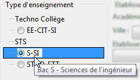
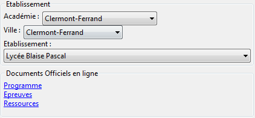
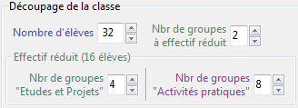

Il est possible de créer :
Pour choisir le type de document :

Ce qui suit est valable dans les deux cas...
Avant de démarrer la création d'un document, il est préférable de configurer correctement la classe :



Remarque : en STI2D, les centres d'intérêt ne sont pas imposés par le B.O.. Par défaut, pySéquence utilise ceux définis pour l'académie de Clermont-Ferrand, mais il est possible de les modifier)
Il est possible de conserver pour les futures fiches de séquence certains paramètres de classe :
Pour rétablir les paramètres de classe par défaut, cliquer sur le bouton

En cas d'utilisation de la version portable de pySequence, et afin que votre PC reconnaisse le type de fichier .seq ou .prj, il est nécessaire d'enregistrer le logiciel dans la base de registre de Windows.